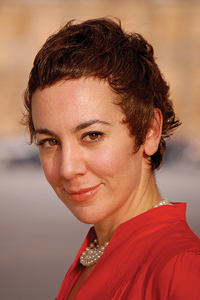
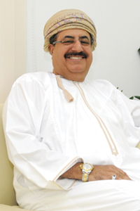
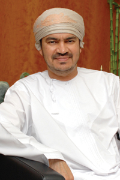
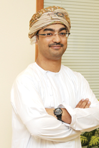
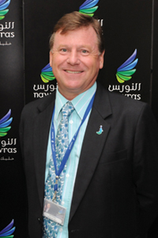
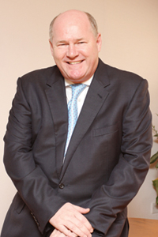
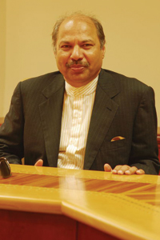
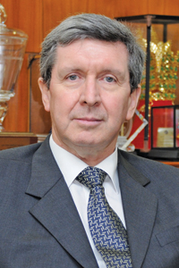

|
|
|
|
|
| |
| |
| |
| |
| |
Nima Abu Wardeh
Journalist, Presenter of BBC World's Middle
East Report
|
|
| |

A bilingual English Arabic broadcast
journalist specialising in Arab issues, Nima
presents BBC World’s weekly business and
finance programme, Middle East Business
Report (MEBR).
Before joining MEBR, Nima was a regular
guest on BBC Radio 4's Four Corners
addressing Arab issues, and a guest on BBC
World's Dateline London as a regional
expert.
She has reported, produced and presented
programmes for Al Jazeera and Dubai’s
Business Channel as well as BBC World.
Nima regularly chairs, and is a speaker at,
regional and global gatherings, notably the
World Economic Forum and the Arab Business
Council meetings, as well as other events
and awards evenings.
Nima won the first Oxford Alumni debate held
in this region in June 2009, while other
accolades include awards for excellence from
regional businesses and communities. Nima is
also a Young Arab Leader.
The OER Debate 2010 is in association with
Capital Market Authority and we are honored
to have confirmation of participation from
H.H. Sayyid Tarik Bin Shabib, Editor in
Chief of Oman Economic Review, H.E. Maqbool
Bin Ali Sultan, Minister for Commerce and
Industry, and H.E. Yahya Al Jabri, Executive
President, Capital Market Authority. Further
building on the value and prestige of the
platform, this year we also welcome Nima Abu
Wardeh, of BBC’s Middle East Report, to
moderate the debate. |
|
| |
|
|
| |
|
|
| |
|
|
| |
Dr. Mohamed Abdulaziz Kalmoor
CEO, Bank Sohar
|
|
| |
Dr
Mohamed Kalmoor has been an integral part of
the banking scenario for three decades. Dr
Kalmoor completed his graduate studies with
honours from the University of Essex, UK and
holds a doctorate in Economics from the
University of Colorado, USA. He joined the
Central Bank of Oman in August 1978. He held
the position of executive vice-president
from 1995 until June 2000. Dr Kalmoor’s
experience has been enriched with
involvement in several areas both within his
work environment and outside. He has been a
member of a number of national and
specialist committees, among them, the Board
of Capital Market Authority, Higher
Education Council, Indian Ocean Rim
Association for Regional Cooperation, as
well as a number of economic and financial
committees. |
|
| |
|
|
| |
|
|
| |
|
|
| |
Pankaj Khimji
Director, Khimji Ramdas
|
|
| |
Pankaj
Khimji is Director of Khimji Ramdas. The
Khimji Ramdas Group (KR) is an established
business conglomerate in the Sultanate of
Oman. Trusted and respected for more than a
century (140 years), KR has consistently
maintained its leadership position in the
consumer, infrastructure and industrial
arenas. Headquartered in the Sultanate of
Oman, KR has diversified businesses in four
strategic groups - Consumer Products,
Lifestyle, Infrastructure and Projects &
Logistics . |
|
| |
|
|
| |
|
|
| |
|
|
| |
Wael al Lawati
CEO, Omran
|
|
| |
As
CEO of Omran Wael al Lawati oversees the
government tourism development and
investment efforts. He played an
instrumental role in launching The Wave,
Muscat, one of Oman’s most highly regarded
tourism projects. Lawati has more than 15
years of experience in diverse roles in
public-private partnership ventures, project
management, major contract strategy
development and investment promotion. He is
also a board member of Muriya Tourism
Development Company, Yiti Tourism
Development Company, Shinas Tourism
Development Company, Sifah Tourism
Development Company, TREDCO, Mutrah Insofoam,
& Investment Committee of NIFCO private
equity fund. Lawati is also a member Young
Arab Leaders Organisation (YAL) which
includes top 500 young Arab leaders and a
member of the Oman Investment Working Group
and of the Project Management Institute
(PMI). |
|
| |
|
|
| |
|
|
| |
|
|
| |
Ross Cormack
CEO, Nawras
|
|
| |
Ross
Cormack has been the CEO of Nawras June
2004. Following an extremely fast build out,
Nawras launched to great acclaim in March
2005 and has already celebrated winning its
first 1.35 mn customers with around 45 per
cent market share in 3.5 years of operation.
Highly praised for its pleasingly different
customer service Nawras has redefined and
simplified the whole customer experience.
Cormack was seconded to Nawras from Qtel
which he joined in May 2003 as Executive
Director Wireless Services, bringing over 20
years of international telecommunications
experience including mobile start-ups and
operations. |
|
| |
|
|
| |
|
|
| |
|
|
| |
Stephen R. Thomas, OBE
CEO, Renaissance Services
|
|
| |
Stephen
Thomas has been instrumental in the
development and progress of Oman’s business
and public community, as well as a
fundamental leader in the direction and
growth of Renaissance Services, for the past
two decades. Thomas joined the Tawoos Group
as General Manager of TISCO in 1988 and was
appointed CEO of Renaissance Services in
1998. He has also sat on the Boards of
National Hospitality Institute SAOG,
Renaissance Hospitality Services SAOG and
Topaz Energy and Marine and Oman Society for
Petroleum Services (OPAL). He also helped
found OPAL in 2001, Oman’s first society for
oil and gas operators, that promotes
Omanisation, quality, HSE and operational
excellence in the industry. Her Majesty
Queen Elizabeth II awarded Thomas an OBE
(Officer of the Most Excellent Order of the
British Empire) in the UK New Year’s Honours
List published on December 31, 2009. The OBE
medal is awarded for a national order of
merit and valuable service is the sole
criteria for the award. |
|
| |
|
|
| |
|
|
| |
|
|
| |
Dr. Mohamed Ali
Vice Chairman and Managing Director ,Galfar
|
|
| |
Dr
Mohamed Ali laid the foundation of Galfar in
the Sultanate in 1972, jointly with Sheikh
Dr. Salem Said Al Fannah Al Araimi. Dr. Ali
steered his first venture, a small
construction company, to great heights which
is now a listed company in Muscat Security
Market. Today, as the single largest private
sector employer in Oman, Galfar plays a key
role in Oman’s economic development. In
recognition of his contributions in the
educational, social services and business
sectors, he has received several national
and international awards and accolades. He
received the Oman Civil Order award from the
representative of His Majesty Sultan Qaboos
in 2002. He also bagged the Pravasi
Bharatiya Samman award from the Prime
Minister of India in 2004 in recognition of
his valuable contributions in promoting the
honour and prestige of India and in
fostering the interests of overseas Indians.
The honorary degree of Doctor of Science was
conferred on Dr Ali by the Vice Chancellor
of the Glasgow Caledonian University on 10th
July 2001. He also received the IOD
Distinguished Fellowship Award 2007 by
Institute of Directors, Business Man Award
1998 by the Business Deepika and V.
Gangadharan Memorial Kerala Pravasi Award. |
|
| |
|
|
| |
|
|
| |
|
|
| |
Dr. Brian Buckley
General Manager and CEO , Oman LNG
|
|
| |
Dr
Brian Buckley joined Royal Dutch Shell in
1980. His career has spanned management and
executive positions in oil refining, gas,
personnel, major projects evaluations and
execution in the oil, gas, chemicals and
metals sectors. He has worked in Europe, the
Caribbean, South America, Asia, Africa and
the Middle East. His career started as a
mathematician and theoretical physicist at
Manchester University and with the UK
Science Research Council. His professional
interests have included a close relationship
with the Institute of Chemical Engineering
(UK) in the late 80’s when he became a
corporate member. He has also chaired many
industrial committees on Technical and
Sustainable Development, in which he has
retained a close and active interest. As CEO
of Oman LNG (since February 2007), Dr
Buckley is the interface between government
and private sector interests, international
energy markets and the rapidly developing
gas sector in the Middle East.
|
|
| |
|
|
|
| |
| |
| |
|
|